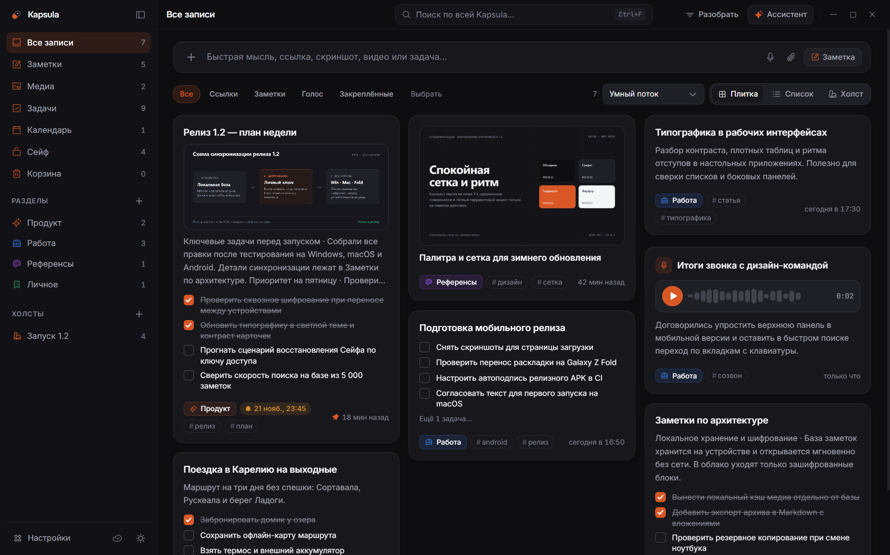

Ваша система
Windows
Windows 10 / 11 (x64), встроенные автообновления
Kapsula-Setup.exe
Скачать Setup.exe
Локальное приложение для Windows, macOS и Android: заметки со связями, быстрая панель по горячей клавише, канбан-доска и зашифрованный Сейф с 2FA.

Лента, центрированный редактор, канбан-доска, Сейф с 2FA, светлая тема и быстрая панель — запись реального приложения без постановочной графики.
Переключайте экраны, чтобы посмотреть реальные режимы работы на компьютере и складном Android-смартфоне.
Никакой обязательной регистрации и закрытых форматов. Данные лежат на вашем диске, а облако получает только шифротекст.
Последний релиз v1.0.1 — готовые установщики и контрольные суммы SHA-256 публикуются в GitHub Releases.
Windows 10 / 11 (x64), встроенные автообновления
Чипы M1, M2, M3, M4 · macOS 13 и новее
Компьютеры Mac на Intel (x64) · macOS 13+
Смартфоны и складные экраны Galaxy Z Fold
Kapsula распространяется бесплатно с открытым исходным кодом и пока собирается без платных коммерческих сертификатов Apple Developer / EV Code Signing.
Windows: если SmartScreen покажет предупреждение, нажмите «Подробнее» → «Выполнить в любом случае».
macOS: перетащите приложение в «Программы», затем откройте через Правый клик → «Открыть» или выполните в Терминале:
xattr -cr /Applications/Kapsula.app